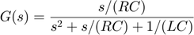
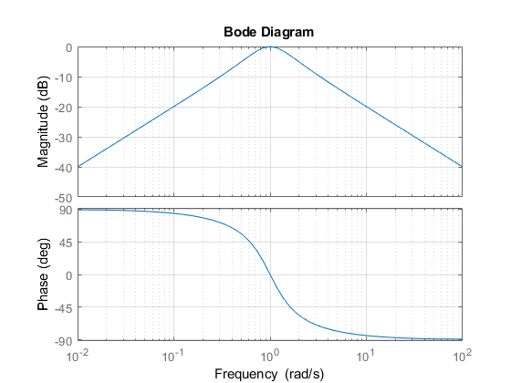
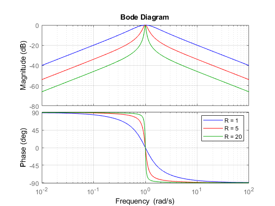
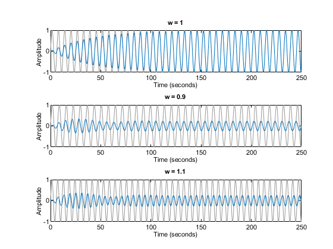
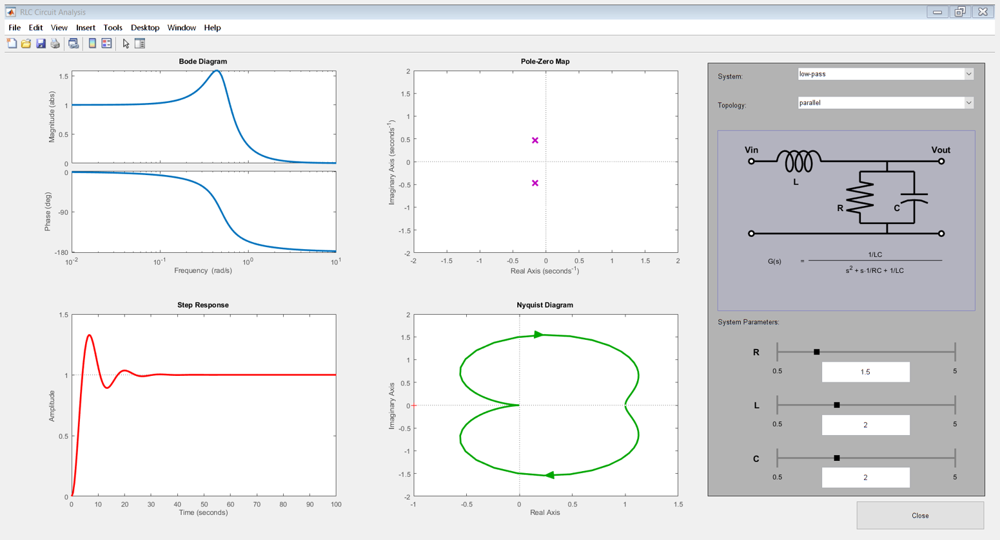

Analyzing the Response of an RLC Circuit
This example shows how to analyze the time and frequency responses of common RLC circuits as a function of their physical parameters using Control System Toolbox™ functions.
Contents
Bandpass RLC Network
The following figure shows the parallel form of a bandpass RLC circuit:

Figure 1: Bandpass RLC Network.
The transfer function from input to output voltage is:

The product LC controls the bandpass frequency while RC controls how narrow the passing band is. To build a bandpass filter tuned to the frequency 1 rad/s, set L=C=1 and use R to tune the filter band.
Analyzing the Frequency Response of the Circuit
The Bode plot is a convenient tool for investigating the bandpass characteristics of the RLC network. Use tf to specify the circuit's transfer function for the values
%|R=L=C=1|:
R = 1; L = 1; C = 1;
G = tf([1/(R*C) 0],[1 1/(R*C) 1/(L*C)])
G =
s
-----------
s^2 + s + 1
Continuous-time transfer function.
Next, use bode to plot the frequency response of the circuit:
bode(G), grid

As expected, the RLC filter has maximum gain at the frequency 1 rad/s. However, the attenuation is only -10dB half a decade away from this frequency. To get a narrower passing band, try increasing values of R as follows:
R1 = 5; G1 = tf([1/(R1*C) 0],[1 1/(R1*C) 1/(L*C)]); R2 = 20; G2 = tf([1/(R2*C) 0],[1 1/(R2*C) 1/(L*C)]); bode(G,'b',G1,'r',G2,'g'), grid legend('R = 1','R = 5','R = 20')

The resistor value R=20 gives a filter narrowly tuned around the target frequency of 1 rad/s.
Analyzing the Time Response of the Circuit
We can confirm the attenuation properties of the circuit G2 (R=20) by simulating how this filter transforms sine waves with frequency 0.9, 1, and 1.1 rad/s:
t = 0:0.05:250; opt = timeoptions; opt.Title.FontWeight = 'Bold'; subplot(311), lsim(G2,sin(t),t,opt), title('w = 1') subplot(312), lsim(G2,sin(0.9*t),t,opt), title('w = 0.9') subplot(313), lsim(G2,sin(1.1*t),t,opt), title('w = 1.1')

The waves at 0.9 and 1.1 rad/s are considerably attenuated. The wave at 1 rad/s comes out unchanged once the transients have died off. The long transient results from the poorly damped poles of the filters, which unfortunately are required for a narrow passing band:
damp(pole(G2))
Pole Damping Frequency Time Constant
(rad/TimeUnit) (TimeUnit)
-2.50e-02 + 1.00e+00i 2.50e-02 1.00e+00 4.00e+01
-2.50e-02 - 1.00e+00i 2.50e-02 1.00e+00 4.00e+01
Interactive GUI
To analyze other standard circuit configurations such as low-pass and high-pass RLC networks, click on the link below to launch an interactive GUI. In this GUI, you can change the R,L,C parameters and see the effect on the time and frequency responses in real time.
rlc_gui
